Барабанова Кристина
Российский университет дружбы народов, Москва, Россия
Барабанова Кристина, студент группы НФИбд-02-22
Основной целью работы является знакомство с инструментом для измерения пропускной способности сети в режиме реального времени — iPerf3, а также получение навыков проведения интерактивного эксперимента по измерению пропускной способности моделируемой сети в среде Mininet.
Запустила виртуальную среду с mininet.
Из основной ОС подключилась к виртуальной машине:
После подключения к виртуальной машине mininet посмотрите IP-адреса машины:
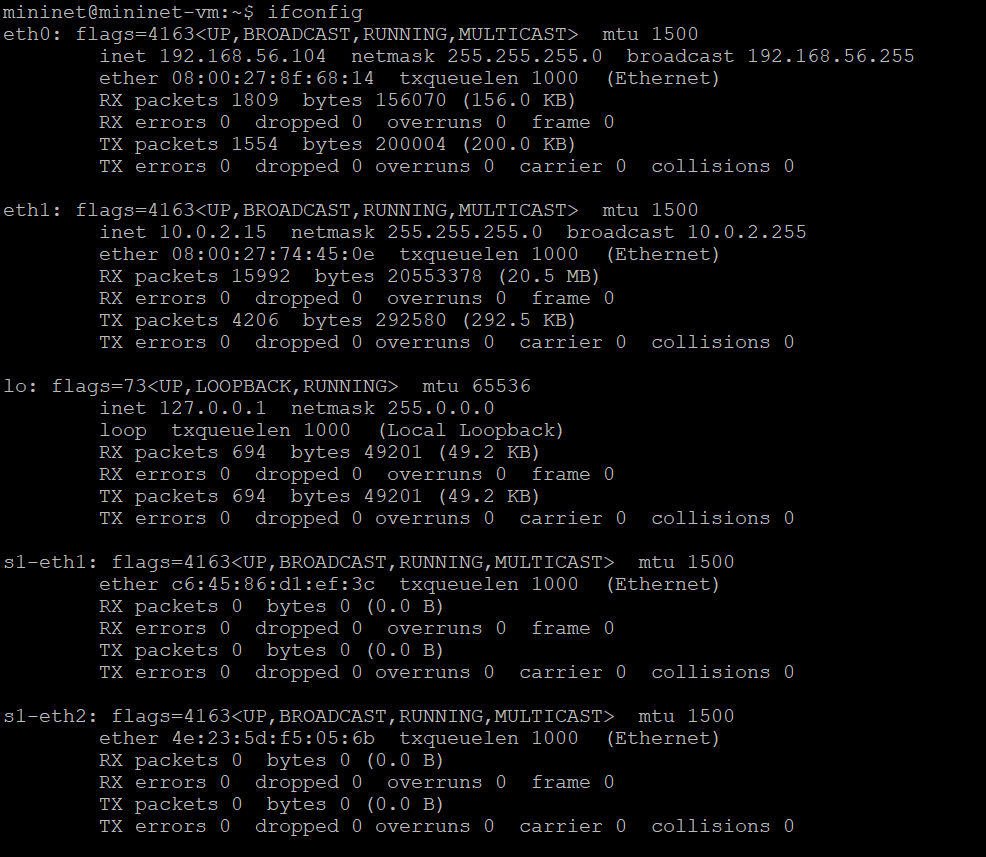
Обновите репозитории программного обеспечения на виртуальной машине:
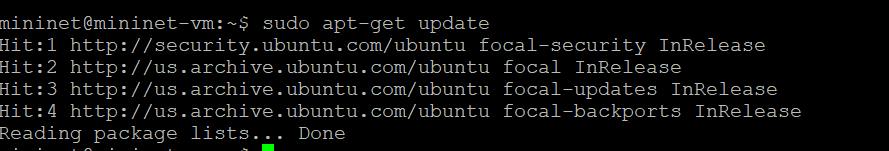
Установите iperf3:
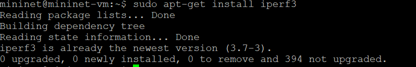
Установите необходимое дополнительное программное обеспечение на виртуальную машину:
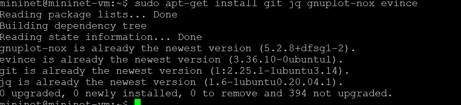
Разверните iperf3_plotter. Для этого: – перейдите во временный каталог и скачайте репозиторий:
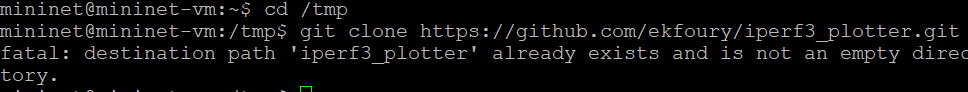
– установите iperf3_plotter:
Задайте простейшую топологию, состоящую из двух хостов и коммутатора с назначенной по умолчанию mininet сетью 10.0.0.0/8:
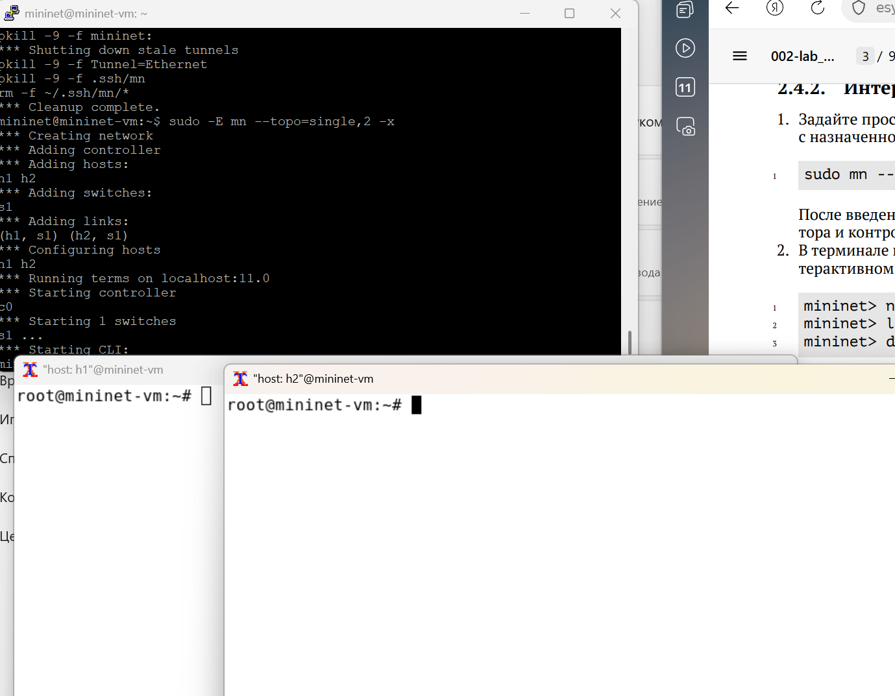
В терминале виртуальной машины посмотрите параметры запущенной в интерактивном режиме топологии:
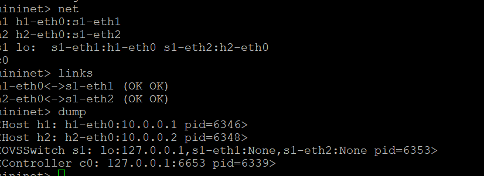
Проведите простейший интерактивный эксперимент по измерению пропускной способности с помощью iPerf3:
В терминале h2 запустите сервер iPerf3:
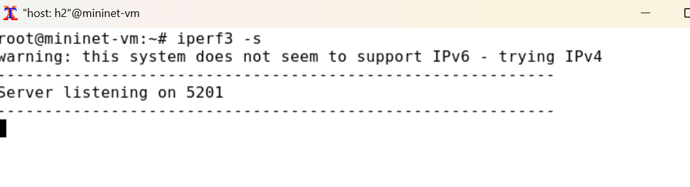
В терминале хоста h1 запустите клиент iPerf3:
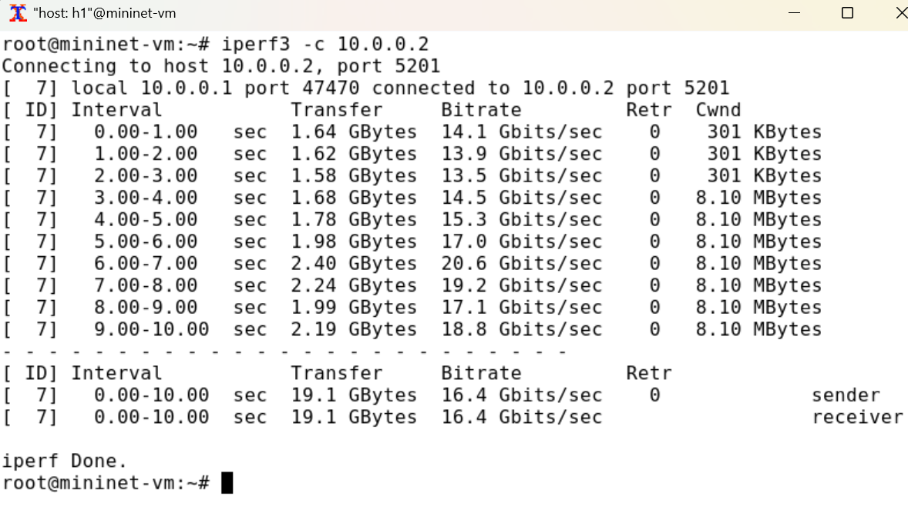
Проведите аналогичный эксперимент в интерфейсе mininet. – Запустите сервер iPerf3 на хосте h2: – Запустите клиент iPerf3 на хосте h1: – Остановите серверный процесс:
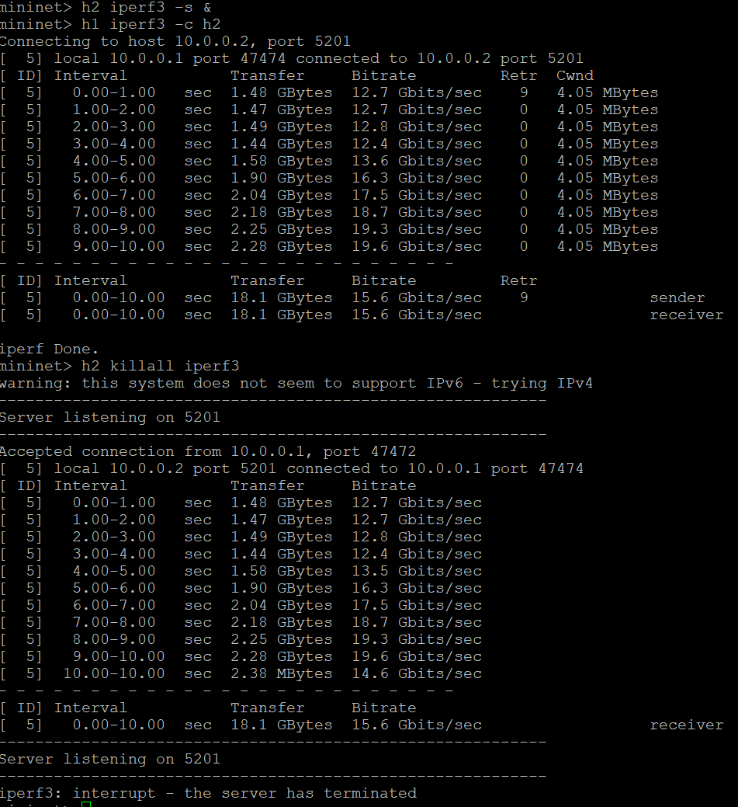
Для указания iPerf3 периода времени для передачи можно использовать ключ -t (или –time) — время в секундах для передачи (по умолчанию 10 секунд): – В терминале h2 запустите сервер iPerf3:
– В терминале h1 запустите клиент iPerf3 с параметром -t, за которым следует количество секунд:
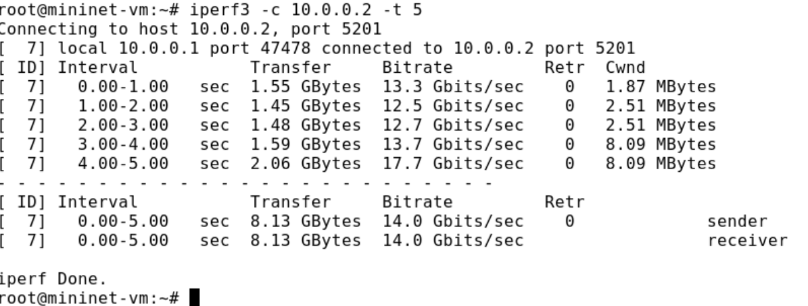
Настройте клиент iPerf3 для выполнения теста пропускной способности с 2-секундным интервалом времени отсчёта как на клиенте, так и на сервере. Используйте опцию -i для установки интервала между отсчётами, измеряемого в секундах: – В терминале h2 запустите сервер iPerf3:
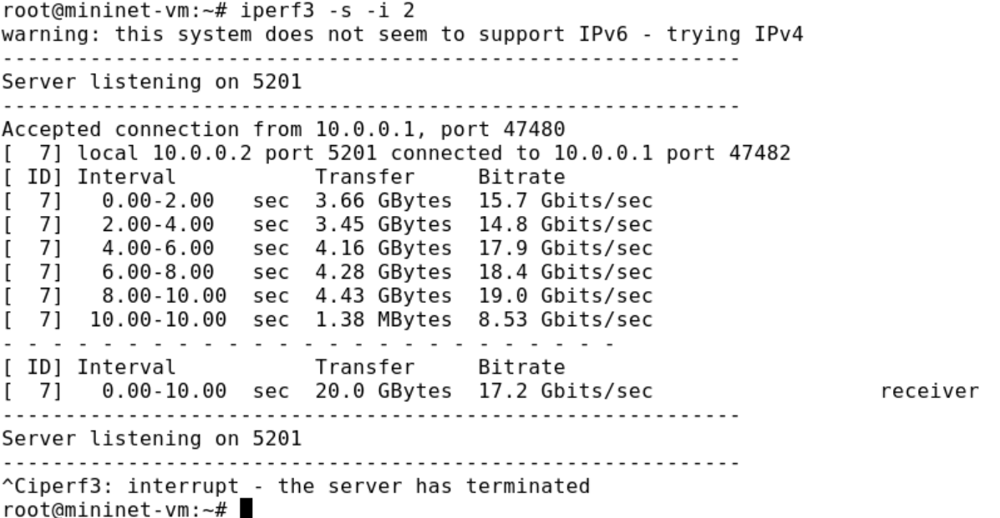
– В терминале h1 запустите клиент iPerf3:
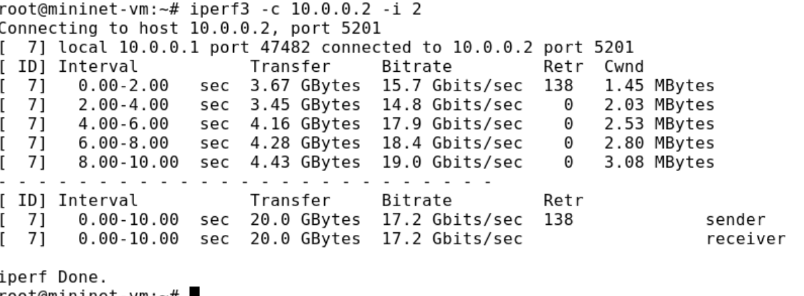
Задайте на клиенте iPerf3 отправку определённого объёма данных. Используйте опцию -n для установки количества байт для передачи: – В терминале h2 запустите сервер iPerf3:
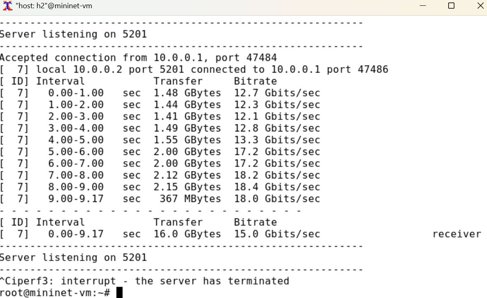
В терминале h1 запустите клиент iPerf3, задав объём данных 16 Гбайт:
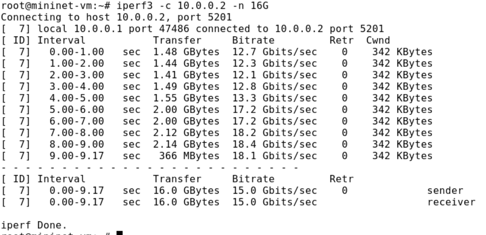
Измените в тесте измерения пропускной способности iPerf3 протокол передачи данных с TCP (установлен по умолчанию) на UDP. iPerf3 автоматически определяет протокол транспортного уровня на стороне сервера. Для изменения протокола используйте опцию -u на стороне клиента iPerf3: – В терминале h2 запустите сервер iPerf3:
– В терминале h1 запустите клиент iPerf3, задав протокол UDP
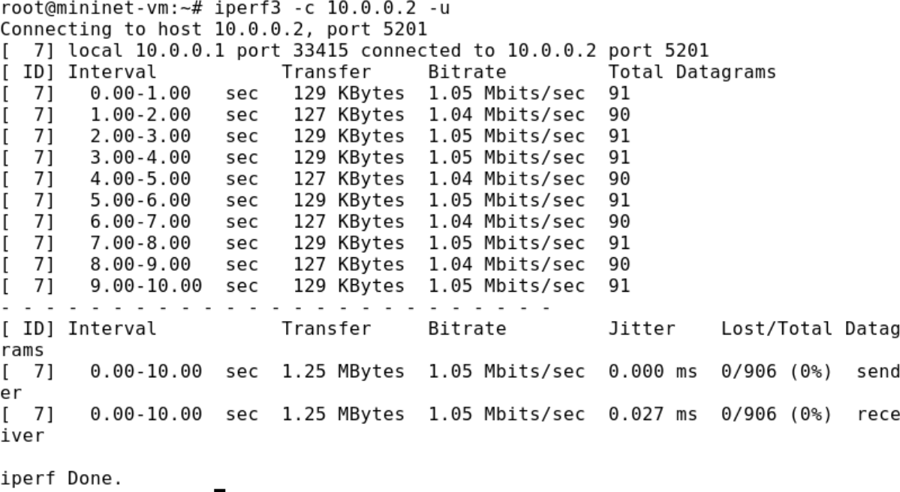
В тесте измерения пропускной способности iPerf3 измените номер порта для отправки/получения пакетов или датаграмм через указанный порт. Используйте для этого опцию -p: – В терминале h2 запустите сервер iPerf3, используя параметр -p, чтобы указать порт прослушивания:
– В терминале h1 запустите клиент iPerf3, указав порт:
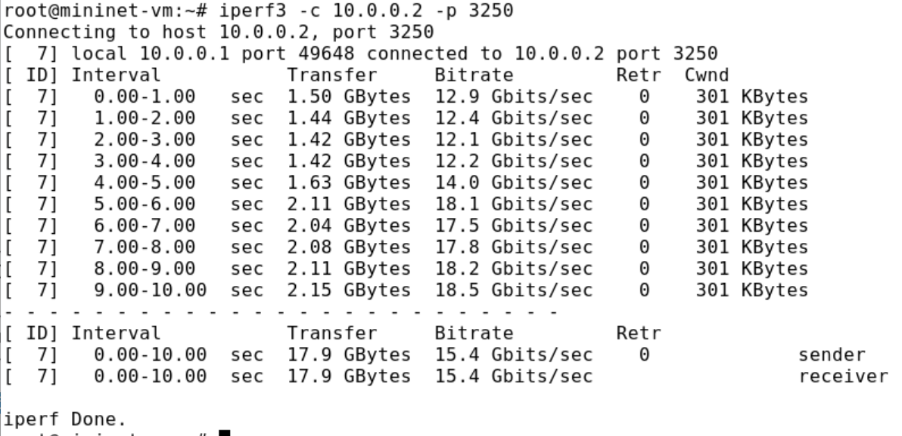
По умолчанию после запуска сервер iPerf3 постоянно прослушивает входящие соединения. В тесте измерения пропускной способности iPerf3 задайте для сервера параметр обработки данных только от одного клиента с остановкой сервера по завершении теста. Для этого используйте опцию -1 на сервере iPerf3: – В терминале h2 запустите сервер iPerf3, используя параметр -1, чтобы принять только одного клиента:
– В терминале h1 запустите клиент iPerf3:
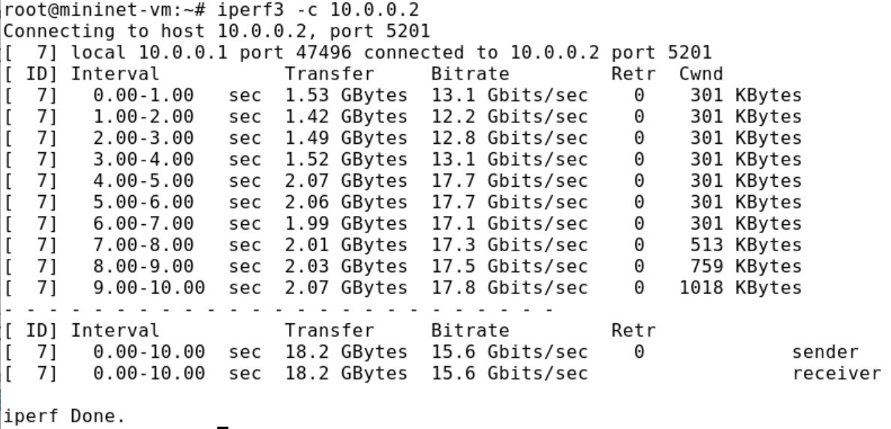
Экспортируйте результаты теста измерения пропускной способности iPerf3 в файл JSON: – В виртуальной машине mininet создайте каталог для работы над проектом:
– В терминале h2 запустите сервер iPerf3:
– В терминале h1 запустите клиент iPerf3, указав параметр -J для отображения вывода результатов в формате JSON:
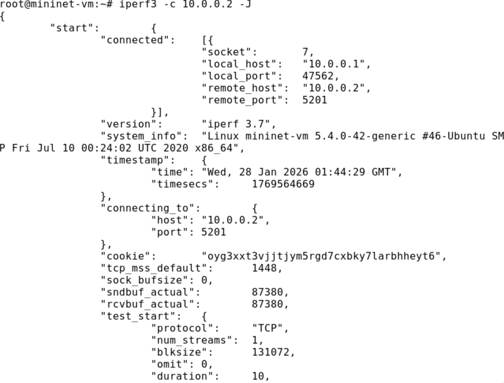
– Экспортируйте вывод результатов теста в файл, перенаправив стандартный вывод в файл
– Убедитесь, что файл iperf_results.json создан в указанном каталоге.
Визуализируйте результаты эксперимента: – В виртуальной машине mininet исправьте права запуска X-соединения. Скопируйте значение куки (MIT magic cookie)1 своего пользователя mininet в файл для пользователя root:
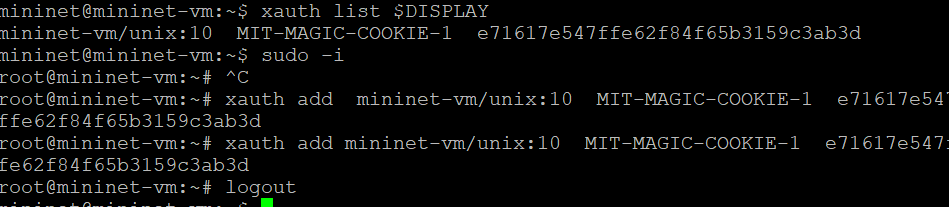
В виртуальной машине mininet перейдите в каталог для работы над проектом, проверьте и при необходимости скорректируйте права доступа к файлу JSON:
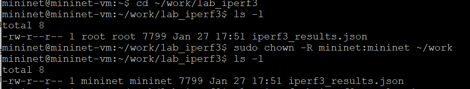
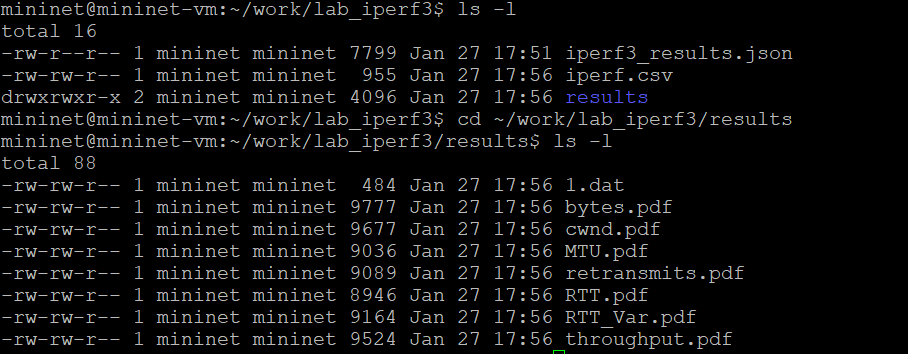
Я познакомство с инструментом для измерения пропускной способности сети в режиме реального времени — iPerf3, а также получила навыки проведения интерактивного эксперимента по измерению пропускной способности моделируемой сети в среде Mininet.